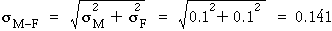

Different standard deviations
Similar results to these on the previous page also hold if X1 and X2 have different standard deviations. The table below generalises the formulae on that page.
Note that, as before, the difference between the variables has the same standard deviation as their sum.
In terms of variances
The formula for the standard deviation can be remembered more easily if expressed in terms of the variances of the three quantities rather than their standard deviations. (Remember that the variance is simply the square of the standard deviation.)

Illustration
The diagram below is similar to that on the previous page but the standard deviations of X1 and X2 can be separately changed by dragging the short vertical lines above their normal distributions. (The means can also be adjusted by draggin the longer vertical lines.)
Again investigate how the distributions of the sum and difference of X1 and X2 are affected by the two means and standard deviations.
In particular, note that:
The standard deviations of X1 + X2 and X1 - X2 are equal and are greater than both σ1 and σ2.
Heights of husband-and-wife pairs
The diagram below simulates sampling a husband and wife from a population where the husband's height is normal with mean 1.85 metres and the wife's height is normal with mean 1.7 metres. It is assumed that there is no tendency for tall males to marry tall females and vice versa — the male and female heights are independent — and that the distributions for both sexes have standard deviation 0.1 metres.
The distributions on the top right show the clearance of a randomly selected male and female from a door frame that is 2.1 metres high. These distributions also have standard deviation 0.1 metres.
Click Accumulate then click Take sample a few times to select different couples.
(Click on any cross in the jittered dot plots to display the husband and wife that gave rise to it.)
The mean male height is 0.15 metres greater than the mean female height, so the distribution of differences (male minus female) is centred on 0.15 metres. Observe also that the difference has greater standard deviation than either the male or female heights on their own.

| The distance between the top of the woman's head and a fixed location (the ground or door frame) has lower spread than the distance to a variable location (the top of the man's head). |
|---|